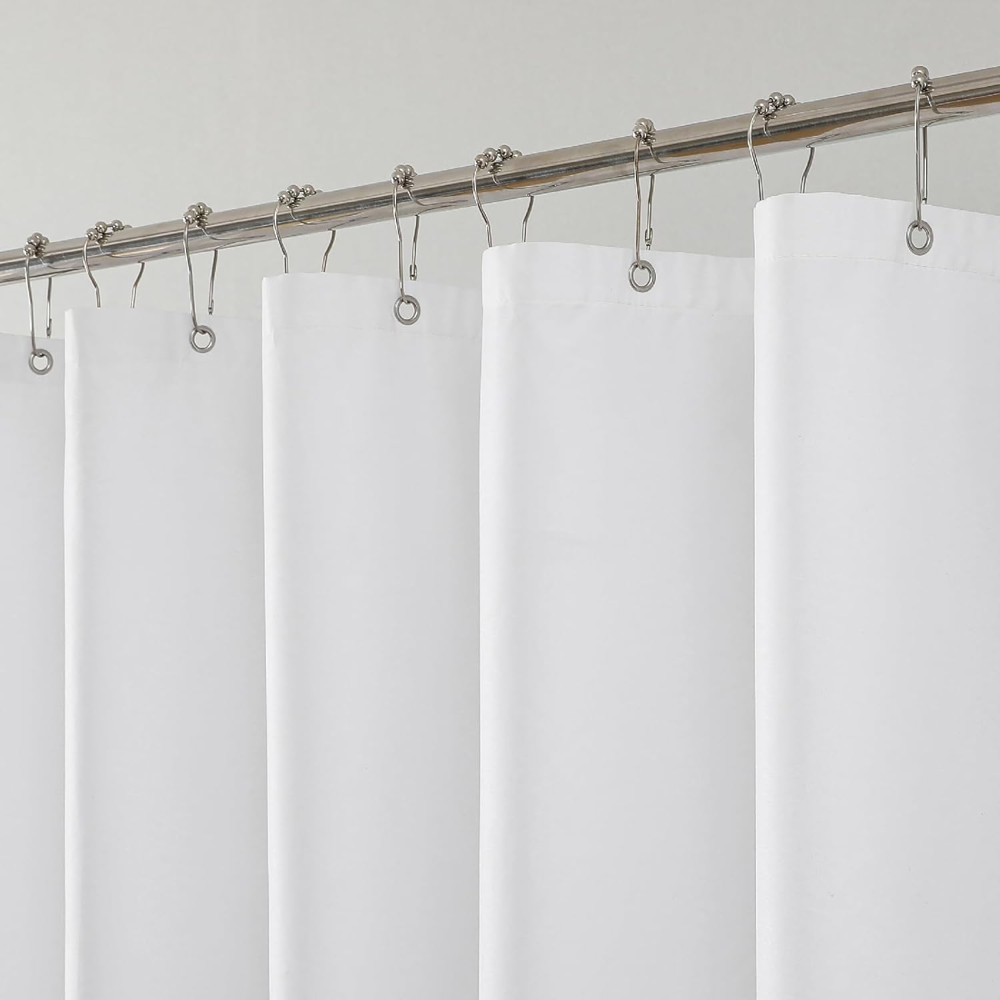

Barossa Design Shower Curtain Liner with 6 Magnets
Waterproof PEVA liner with 6 weighted magnets, rust-proof grommets, and 3 bottom magnets to keep liner in place. Chlorine-free and odorless.

A shower curtain liner is the unsung hero of every bathroom. While decorative shower curtains get all the attention, it is the liner that does the heavy lifting: blocking water from splashing onto your bathroom floor, preventing mold growth on your outer curtain, and keeping moisture contained inside the tub or shower enclosure. Without a reliable liner, you are practically inviting water damage, slippery floors, and costly repairs into your home.

Ilane Tall
Product Researcher | Specializing in bathroom products and home textiles
All recommendations based on rigorous product research and customer review analysis.
Whether your bathroom floor is tile, vinyl, or hardwood, standing water is the enemy. Even small amounts of water escaping during a shower can seep into grout lines, warp baseboards, and create breeding grounds for mold and mildew beneath the surface. A high-quality shower curtain liner addresses all of these problems for less than the cost of a fast-food meal.
In this guide, we have reviewed the five best shower curtain liners available in 2026. We compared materials, magnet systems, mildew resistance, and overall value to help you find the perfect liner for your bathroom. Every product featured below is a proven performer backed by thousands of verified customer reviews on Amazon. For a deeper look at how materials compare, see our detailed guide on fabric vs vinyl vs PEVA shower curtains.
Table of Contents
- Why You Need a Shower Curtain Liner
- Types of Shower Curtain Liners
- 1. Barossa Design Shower Curtain Liner (Best Overall)
- 2. N&Y HOME Fabric Shower Curtain Liner (Best Fabric)
- 3. LiBa Bathroom Shower Curtain (Best Budget)
- 4. THAIGEE Water-Repellent Fabric Liner (Best Value)
- 5. BigFoot Clear Shower Curtain Liner (Best Clear)
- Comparison Table
- How to Choose the Right Liner
- Installation Tips
- Frequently Asked Questions
- Conclusion
Why You Need a Shower Curtain Liner
Many homeowners assume a shower curtain alone is enough to contain water during a shower. This is one of the most common and costly bathroom misconceptions. A decorative shower curtain, especially one made from fabric, is designed for aesthetics first and water protection second. Without a dedicated liner behind it, water passes through the weave, soaks the fabric, and drips directly onto your bathroom floor.
The consequences of water escaping your shower area compound over time. At first, you might notice small puddles on the floor after every shower. Within weeks, those puddles lead to discoloration in grout lines. Within months, persistent moisture can cause subflooring damage, warped baseboards, and mold growth inside the walls. The Environmental Protection Agency warns that indoor mold can cause respiratory issues, allergic reactions, and aggravate asthma symptoms, making it a genuine health concern, not just a cosmetic problem.
A shower curtain liner solves all of these problems. It creates a waterproof barrier between the shower spray and the rest of your bathroom. The liner hangs inside the tub, directing water downward into the drain instead of outward onto the floor. Modern liners include weighted magnets along the bottom hem that keep the liner pressed against the tub wall, preventing gaps where water could escape. If you are already dealing with moisture issues, you may want to read our guide on the best mildew-resistant shower curtains for additional solutions.
Beyond floor protection, liners also extend the life of your decorative outer curtain. By taking the brunt of daily water exposure, soap residue, and shampoo splatter, the liner keeps your expensive fabric or patterned curtain looking fresh far longer. When the liner eventually shows wear, you simply replace it for under ten dollars, rather than replacing the entire curtain setup. This makes liners one of the most cost-effective investments you can make in bathroom maintenance.
Types of Shower Curtain Liners
Shower curtain liners come in three primary materials, each with distinct advantages and trade-offs. Understanding these differences is essential for choosing a liner that fits your priorities, whether that means maximum waterproofing, easy maintenance, eco-friendliness, or a combination of all three.
PEVA Liners (Polyethylene Vinyl Acetate)
PEVA liners have become the most popular choice for health-conscious consumers. Unlike traditional PVC or vinyl liners, PEVA is chlorine-free and does not release harmful volatile organic compounds (VOCs) into your bathroom air — a benefit recognized by the EPA Safer Choice program, which encourages the use of products with safer chemical profiles. You will not experience that strong chemical smell when you first unpackage a PEVA liner, which is a telltale sign of off-gassing from PVC products. PEVA liners offer excellent waterproofing at an affordable price point, typically ranging from seven to twelve dollars. They are lightweight, easy to hang, and available in both clear and opaque options. The main downside is durability: PEVA tends to stiffen and crack over time, especially in hard-water areas, meaning you will likely need to replace it every six to twelve months.
Fabric Liners (Polyester)
Fabric liners made from polyester offer a more upscale look and feel compared to plastic alternatives. They drape elegantly, resist wrinkling, and are machine washable, which makes maintenance straightforward. High-quality fabric liners use water-repellent coatings to shed water quickly, though they are technically water-resistant rather than fully waterproof. This means heavy, direct spray might eventually soak through, making them best suited for use with a tub rather than a doorless walk-in shower. The biggest advantage of fabric liners is longevity: with regular washing every few weeks, a good fabric liner can last two years or more. They are also quieter during use, as they do not crinkle or stick to your skin the way plastic liners can.
Plastic Liners (Standard Plastic / Vinyl)
Traditional plastic and vinyl liners remain popular due to their rock-bottom prices and complete waterproofing. They create an impenetrable barrier against water, making them the most effective choice for heavy-duty splash protection. However, standard vinyl liners contain PVC, which releases chlorine-based compounds and phthalates. If you choose a plastic liner, look specifically for products labeled as PVC-free, phthalate-free, or eco-friendly. Plastic liners are also the easiest to wipe down between washes, as soap scum and mineral deposits can be removed with a damp cloth and some baking soda. Their main drawback is that they can feel inexpensive and may stick uncomfortably to your body during a shower, a problem largely solved by choosing models with bottom magnets or weighted hems.
For a more comprehensive breakdown of these materials, check out our in-depth comparison at Fabric vs Vinyl vs PEVA Shower Curtains: Which Material Is Best?
1. Barossa Design Shower Curtain Liner with 6 Magnets
Best Overall: Barossa Design PEVA Liner
Key Features:
- 6 Weighted Magnets: Three magnets along the bottom hem keep the liner firmly against the tub, preventing billowing and water escape
- Chlorine-Free PEVA: No toxic PVC, no harsh chemical smell right out of the package
- Rust-Proof Metal Grommets: Reinforced grommets prevent tearing and resist corrosion in humid environments
- Waterproof Construction: Fully waterproof material blocks 100% of water from passing through
- Standard 72" x 72" Size: Fits all standard shower rods and tub enclosures
Why We Love It
The Barossa Design liner earns our top recommendation because it solves the number one complaint about shower liners: billowing. With six strategically placed magnets along the bottom edge, this liner stays put against the tub wall even when hot water creates convection currents inside the shower. The PEVA material is thick enough to feel durable yet flexible enough to drape naturally. Buyers consistently report that the liner arrives without the typical plastic smell, which is a direct benefit of the chlorine-free PEVA construction. At under ten dollars with over 91,000 reviews and a 4.5-star average, this liner delivers exceptional value that is difficult to beat.
Pros
- 6 magnets provide superior anti-billow performance
- No chemical odor out of the box
- Reinforced grommets resist rust and tearing
- Affordable at under $10
- Over 91,000 verified reviews
Cons
- PEVA can stiffen over time in hard-water areas
- Not machine washable; hand clean only
- Clear material may become cloudy after several months
2. N&Y HOME Fabric Shower Curtain Liner
Best Fabric Liner: N&Y HOME Solid White with Magnets

Key Features:
- Machine Washable: Toss it in the washing machine whenever it needs refreshing, no hand scrubbing required
- Water-Repellent Fabric: Treated polyester sheds water quickly while allowing airflow to reduce mildew
- Built-In Magnets: Weighted magnets along the hem keep the liner from floating and clinging
- Soft, Quiet Material: No crinkling or sticking to skin during showers
- Hotel-Quality Appearance: Clean white fabric looks presentable enough to use without an outer curtain
Why We Love It
The N&Y HOME fabric liner is the highest-rated product in our lineup, and for good reason. The polyester fabric feels soft and substantial, nothing like the thin, clingy plastic liners that frustrate so many shower users. It drapes smoothly, hangs quietly, and looks polished enough to serve as a standalone curtain if you prefer a minimalist bathroom aesthetic. The real standout feature is machine washability. When soap scum or mildew begins to appear, you simply remove the liner, wash it on a gentle cycle, and rehang it. This ease of maintenance means a single liner can last well over a year, making it more economical than PEVA liners that need frequent replacement. With 68,277 reviews and a 4.6-star rating, this is the fabric liner that consistently outperforms its competition.
Pros
- Machine washable for easy long-term maintenance
- Highest rating in our lineup at 4.6 stars
- Soft fabric does not cling to skin
- Attractive enough to use without a decorative curtain
- Excellent value at under $9
Cons
- Water-resistant, not fully waterproof; heavy spray can penetrate
- Requires periodic washing to prevent mildew
- Takes longer to dry than plastic or PEVA liners
3. LiBa Bathroom Shower Curtain Waterproof Plastic
Best Budget: LiBa Waterproof PEVA Liner


Key Features:
- Massive Customer Validation: Over 254,000 reviews make this the most-reviewed shower liner on Amazon
- 100% Waterproof: Complete water barrier prevents any leakage through the material
- 3 Bottom Magnets: Weighted magnets along the bottom hem reduce billowing and keep liner in position
- Non-Toxic PEVA: Free from PVC, chlorine, and harmful chemicals
- Budget-Friendly: Premium protection at a price that allows regular replacement
Why We Love It
When a product accumulates over a quarter of a million reviews while maintaining a 4.5-star rating, it speaks for itself. The LiBa shower curtain liner is the single most popular shower liner in existence, and the reason is simple: it delivers reliable waterproof protection at the lowest price point in our roundup. The PEVA construction keeps harmful chemicals out of your bathroom air, the three bottom magnets prevent annoying billowing, and the lightweight material makes installation a one-minute job. This is the liner to buy if you prefer a replacement-based maintenance strategy, picking up a new one every six to eight months rather than fussing with cleaning. At $8.59, the cost per month of use is almost negligible.
Pros
- Most-reviewed shower liner on Amazon with 254,000+ reviews
- Lowest price in our roundup at $8.59
- Fully waterproof with zero seepage
- Non-toxic PEVA material
- Lightweight and easy to install
Cons
- Only 3 magnets vs. 6 in the Barossa Design
- Thinner material than premium options
- May need replacement more frequently
4. THAIGEE Water-Repellent Fabric Shower Curtain Liner
Best Value: THAIGEE Water-Repellent Fabric Liner


Key Features:
- Lowest Price: At $7.19, this is the most affordable liner in our entire lineup
- Water-Repellent Coating: Advanced treatment causes water to bead up and roll off the fabric surface
- Machine Washable: Easy to maintain through regular machine washing cycles
- Weighted Bottom Hem: Added weight along the bottom edge keeps the liner hanging straight
- Quick-Dry Fabric: Lightweight polyester dries faster than heavier fabric liners
Why We Love It
The THAIGEE fabric liner delivers an impressive combination of quality and affordability that makes it our best value pick. At just $7.19, it undercuts every other product in this roundup while still offering the premium feel of a fabric liner. The water-repellent treatment works effectively, causing shower spray to bead on the surface and roll down into the tub rather than soaking through the material. Like the N&Y HOME option above, this liner is fully machine washable, giving it a much longer useful life than disposable plastic alternatives. The quick-dry fabric is a particularly nice touch, as it means the liner dries out faster between showers, reducing the window for mildew growth. With nearly 57,000 reviews and a 4.5-star rating, this liner punches well above its price class.
Pros
- Best price-to-quality ratio in our roundup
- Machine washable for extended lifespan
- Quick-drying fabric resists mildew naturally
- Soft, non-clingy material
- Nearly 57,000 positive reviews
Cons
- Water-repellent rather than fully waterproof
- Weighted hem instead of dedicated magnets
- May require more frequent washing in high-use bathrooms
5. BigFoot Clear Shower Curtain Liner - Odorless Plastic
Best Clear Liner: BigFoot Odorless Plastic Liner


Key Features:
- Crystal Clear Design: Transparent material allows full light transmission, keeping the shower area bright
- Truly Odorless: Zero chemical smell on arrival, no off-gassing period needed
- Weighted Magnets: Magnets sewn into the bottom hem provide reliable anti-billow performance
- Reinforced Header: Sturdy top edge with reinforced grommet holes resists tearing
- Mildew-Resistant Surface: Smooth plastic surface resists mold and mildew buildup
Why We Love It
The BigFoot Clear Liner is the ideal choice for bathrooms where natural light is at a premium. Many bathrooms have limited lighting, and an opaque or white liner can make the shower feel enclosed and dark. The BigFoot liner solves this by offering crystal-clear transparency that lets light pass freely through, creating a more open and airy shower experience. What truly sets it apart, however, is the completely odorless design. While many plastic liners claim to be scent-free, the BigFoot liner genuinely has no detectable chemical smell when you first hang it, a claim backed by its 18,864 reviewers. The weighted magnets keep it secure against the tub, and the reinforced header ensures the grommets will not tear under daily use. If you want full waterproof protection without sacrificing light or breathing clean air, this clear liner is the one to buy.
Pros
- Allows maximum light into the shower area
- Genuinely odorless right out of the package
- Weighted magnets prevent billowing
- Reinforced grommets for durability
- Smooth surface resists mold buildup
Cons
- Clear material shows water spots and soap buildup more visibly
- Less privacy than white or opaque liners
- Fewer reviews than the top-ranked options
Shower Curtain Liner Comparison Table
Use this side-by-side comparison to quickly evaluate how each liner stacks up across the features that matter most for protecting your bathroom floor.
| Product | Material | Magnets | Price | Best For |
|---|---|---|---|---|
| Barossa Design | PEVA | 6 Magnets | $9.99 | Best Overall |
| N&Y HOME | Polyester Fabric | Bottom Magnets | $8.96 | Best Fabric Liner |
| LiBa | PEVA Plastic | 3 Magnets | $8.59 | Best Budget |
| THAIGEE | Water-Repellent Fabric | Weighted Hem | $7.19 | Best Value |
| BigFoot | Odorless PEVA | Weighted Magnets | $9.99 | Best Clear Liner |
How to Choose the Right Liner
With so many options on the market, selecting the right shower curtain liner comes down to understanding your specific bathroom conditions and personal preferences. Here are the key factors to evaluate before you buy.
Consider Your Shower Type
The type of shower enclosure you have directly affects which liner material works best. Standard tub-and-shower combinations pair well with any liner type, since the tub catches water that the liner directs downward. Walk-in showers or showers with partial glass panels may require a fully waterproof PEVA or plastic liner, as fabric options could allow water through under heavy direct spray. If your shower has a rainfall showerhead that creates significant splash, prioritize liners with multiple magnets to prevent gaps at the bottom edge.
Evaluate Your Maintenance Style
Be honest about how much effort you want to put into liner maintenance. If you prefer a set-it-and-forget-it approach, a PEVA liner that you replace every six to eight months may be the easiest option. If you do not mind adding a liner to your regular laundry rotation, a machine-washable fabric liner provides better long-term value and a more sustainable approach. Our guide on cleaning shower curtains covers maintenance techniques for every material type.
Prioritize Health and Safety
If chemical sensitivity, children, or pets are a concern in your household, avoid traditional PVC or vinyl liners entirely. Stick with PEVA or fabric options that are free from chlorine, phthalates, and VOCs. Every liner in our top five meets these safety standards, but it is always worth checking the product listing to confirm if you are purchasing a different brand. Look for certifications or specific claims about chemical safety on the product packaging.
Think About Aesthetics
If your liner will be visible, whether because you skip the outer curtain or because your outer curtain is sheer, appearance matters. Fabric liners in white or neutral tones provide a clean, hotel-like look. Clear liners maximize brightness. Frosted liners split the difference between light transmission and privacy. Match the liner's appearance to your overall bathroom design for a cohesive look. For more design inspiration, check out our article on the best waterproof shower curtains.
Installation Tips for Maximum Floor Protection
Even the best shower curtain liner will underperform if it is not installed correctly. These tips ensure your liner provides complete water containment from day one.
Always hang the liner inside the tub. This is the golden rule. The liner should drape into the tub or shower basin so that water runs down the liner and into the drain. If the liner hangs outside the tub, water will wick down the material and pool directly on your bathroom floor, which defeats the entire purpose of having a liner.
Use all available grommet holes. Shower curtain liners typically have 12 grommet holes that correspond to 12 rings or hooks on your shower rod. Use every one of them. Skipping grommets creates gaps in the liner that allow water to spray through. Rust-proof hooks or rings are a worthwhile investment, as they prevent brown stains from forming on the liner over time.
Overlap the liner and outer curtain on the same hooks. If you use both a decorative curtain and a liner, hang them on the same hooks but on separate rings (inner ring for liner, outer ring for curtain). This keeps both layers aligned and prevents the liner from bunching or twisting behind the outer curtain.
Check the magnet placement. After hanging the liner, verify that the bottom magnets are making contact with the tub surface. If your tub is acrylic or fiberglass rather than metal, the magnets will not stick magnetically but their added weight still helps hold the liner in place. Some users place a thin metal strip inside the tub edge to give the magnets something to grip.
Spread the liner after every shower. After showering, pull the liner closed so it spreads across its full width. This maximizes air exposure and allows the liner to dry completely before your next use. A liner that stays bunched up in one corner will develop mildew significantly faster than one that dries fully between uses. If you want to explore additional products for mildew control, have a look at our mildew-resistant shower curtain recommendations.
Frequently Asked Questions
How often should you replace a shower curtain liner?
Most shower curtain liners should be replaced every 6 to 12 months, depending on the material and how well you maintain them. Fabric liners that are machine washable can last longer, up to 18 months or more, since regular washing removes mildew and soap buildup. PEVA and plastic liners tend to degrade faster but can be extended with proper ventilation and occasional cleaning. Signs that indicate replacement time include persistent discoloration, a slimy texture that does not respond to cleaning, visible tears or cracks, and a lingering musty smell even after washing.
Are PEVA liners safer than vinyl or PVC liners?
Yes, PEVA (polyethylene vinyl acetate) liners are considered a safer alternative to traditional PVC or vinyl liners. PEVA is chlorine-free and does not release volatile organic compounds (VOCs) or that strong "new shower curtain" chemical smell. They are also free of phthalates and other potentially harmful plasticizers found in standard vinyl curtains. If you have children, pets, or anyone with chemical sensitivities in your household, PEVA is the recommended choice for plastic-type liners. All of the PEVA liners in our roundup are labeled as non-toxic.
Do shower curtain liner magnets actually work?
Yes, weighted magnets at the bottom of shower curtain liners are highly effective at keeping the liner from billowing inward and clinging to you during a shower. They also help keep the liner pressed against the tub or shower wall, which significantly reduces water escaping onto the bathroom floor. Look for liners with at least 3 magnets for best results; 6 magnets, like those in the Barossa Design liner, provide even better coverage. Keep in mind that magnets work best with metal tubs. In acrylic or fiberglass tubs, the magnets still function as weights to hold the liner in place, even though they will not create a magnetic seal.
Can you use a shower curtain liner without a shower curtain?
Absolutely. Many people use a liner on its own, especially if they prefer a minimalist look or have a small bathroom where doubling curtains feels bulky. Fabric liners in solid white or neutral tones look perfectly presentable as standalone curtains. The main trade-off is that you lose the decorative element of an outer curtain, but functionally, a quality liner alone provides full water protection. The N&Y HOME and THAIGEE fabric liners featured in this guide both look elegant enough to serve this dual purpose.
What is the best shower curtain liner material for preventing mildew?
Fabric liners made from polyester tend to be the most mildew-resistant when machine washed regularly. PEVA liners also resist mildew well due to their non-porous surface. The key to mildew prevention with any material is proper ventilation: always spread the liner out after showering so it can dry fully, and run your bathroom fan for at least 20 minutes after each shower. If mildew is a recurring problem in your bathroom, consider pairing your liner with a mildew-resistant outer curtain from our dedicated guide.
Should a shower curtain liner go inside or outside the tub?
The shower curtain liner should always go inside the tub or shower basin. This is the most critical rule for preventing water from reaching your bathroom floor. The decorative outer curtain hangs on the outside. When you shower, the water hits the liner, runs down it, and drains directly into the tub. If the liner hangs outside, water will wick down the fabric and pool on the floor, potentially causing water damage, mold growth, and slip hazards over time.
Conclusion: Protect Your Bathroom Floor Today
A quality shower curtain liner is one of the simplest, most affordable upgrades you can make to protect your bathroom from water damage. Every liner featured in this guide costs under ten dollars, yet the protection they provide can save you hundreds or even thousands in floor repair, mold remediation, and water damage restoration down the road.
Our overall recommendation is the Barossa Design Shower Curtain Liner for its superior 6-magnet system, chlorine-free PEVA construction, and outstanding 91,000+ review track record. If you prefer the feel and washability of fabric, the N&Y HOME Fabric Liner is the clear winner with its 4.6-star rating and machine-washable convenience. And for shoppers on the tightest budget, the LiBa Waterproof Liner has earned the trust of over 254,000 Amazon customers for good reason.
Ready to Protect Your Bathroom Floor?
Pick the liner that matches your needs and start keeping water where it belongs.
🏠 COMPLETE YOUR BATHROOM
Best Bath Rugs 2026
Memory foam mats + non-slip safety + expert guide
Explore →Complete Your Bathroom Upgrade
Our network of expert review sites covers every bathroom essential: